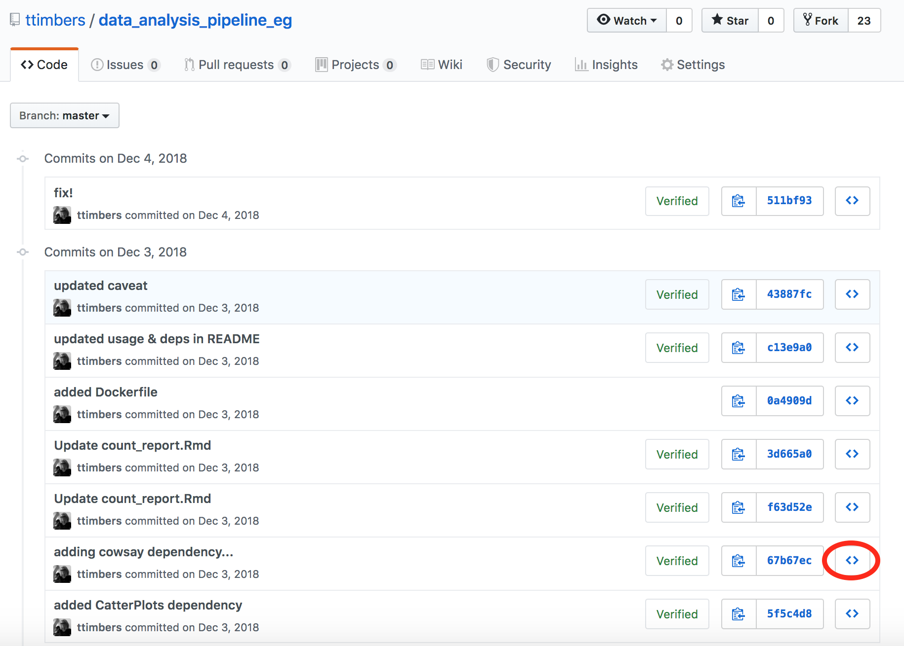

4 Version control (for transparency and collaboration) I
Learning Objectives
- Explain why and how data analysis projects benefit from both local and remote version control
- Use Git’s basic functions to save changes to local and remote version control, as well as view and restore older versions of files
4.1 Version control - a review
Version control is the process of keeping a record of changes to documents, including when the changes were made and who made them, throughout the history of their development. It also provides the means both to view earlier versions of the project and to revert changes.
In this course we will learn to use the most popular version control software tools, Git and GitHub. A schematic of local and remote version control repositories using these tools is shown below:

Source: Data Science: A First Introduction
A poll!
We expect some introductory version control knowledge before the contents of this chapter. Essentially, what is covered in Chapter 12: Collaboration with version control from Data Science: A First Introduction. Here’s a poll to check you have the prerequisite knowledge for this chapter. If you cannot easily answer these questions we recommend you go back to Chapter 12: Collaboration with version control from Data Science: A First Introduction and read (or re-read) it.
Which of these is untrue about the Git and GitHub version control software?
a. Allows you to view and/or retrieve older snapshots of the files and directories in a project.
b. Automatically snapshots your work every 2 minutes.
c. Provides transparency on who made what changes to files and directories in a document.
d. Can act as a way to back-up your work.
GitHub is the software you use locally on your computer (i.e., your laptop) to commit changes to the version control history. True or False?
a. True
b. False
c. Neither true or false.
You changed two files (notes.txt and eda.ipynb) but you only want to commit changes to one of them (eda.ipynb) to the version control history. Which Git command allows you to specify this?
a. Add
b. Commit
c. Push
d. Push
At a minimum, how often should you push your work to GitHub?
a. Every 5 min.
b. Every 30 min.
c. At the end of every work session.
d. Once a week.
You try to push your most recent commit from your locale version control repository to your remote repository on GitHub and it fails because Git says the remote contains work that you do not have locally. What do should you do next?
a. Commit the changes you made recently in your working directory.
b. Force push your changes.
c. Pull the changes from the remote repository that you do not have locally.
You pull changes that exist in your remote version control repository on GitHub that you do not have in your local version control repository, and you get the message
Auto-merging in <FILENAME> CONFLICT (content):
Merge conflict in <FILENAME> Automatic merge failed
fix conflicts and then commit the result.What do you need to do?
a. Push the changes from the local repository that you do not have remotely.
b. Force pull the changes.
c. Manually open the file with the conflict and edit it to have the desired version of the changes, as well as remove the special Git syntax used to identify the merge conflict.
4.2 Common Git commands at the command line
In the assigned textbook reading we use the JupyterLab Git extension tool to run Git version control commands (adding to the staging area, committing, pushing, pulling). However, here we will start using Git commands at the command line (i.e., Bash shell/terminal) because these commands are more stable than most Git graphical user interfaces (such as the JupyterLab Git extension tool). Additionally, the Git command line tool provides access to all Git features, some of which are missing in several Git graphical user interfaces Thus, below we list the most common Git commands that you would need at the command line:
| Description | Command |
|---|---|
| Clone a remote version control repository from GitHub.com to your local computer | git clone |
| Checking the status of the local version control repository | git status |
| Adding a file to the staging area | git add <FILENAME> |
| Committing staged file to the version control history | git commit -m "Some relevant message about the changes" |
| Push changes to the local version control repository to the remote repository on GitHub.com | git push |
| Pull changes from the remote version control repository on GitHub.com to the local repository | git pull |
| Viewing the version control history | git log |
4.3 Hands on practice with merge conflicts!
One of the major blockers getting used to using version control is dealing with merge conflicts! üò±
Git can automatically handle merging two versions of a file if each collaborator changes different lines, however when two collaborators change the same line, Git throws up its hands and says, I cannot handle this responsibility, I need help from a human!

When this happens, your human task is to find the merge conflict markers, remove them, and settle on which version of the line(s) where the conflict occurred should remain. Merge conflict markers include:
<<<<<<< HEADto indicate the beginning of the merge conflict>>>>>>>to indicate the end of the merge conflict=======between the markings mentioned above to indicate the boundary between the two proposed changes. The version of the change before the separator is your > change, and the version that follows the separator was the change that existed on GitHub.
We are going to now generate and resolve merge conflicts.I have set-up a template GitHub repository for you so that you can easily generate a merge conflict to resolve. We will do this twice, once with a simple plain text file (e.g., an R script) and once with a more complex text file (e.g., a Jupyter notebook).
Resolving merge conflicts in a simple text file:
Click the green “Use this template” button from this GitHub repository to obtain a copy of it for yourself (do not fork it).
Clone this repository to your computer.
Click on the Actions tab, and then click on the workflow .github/workflows/main.yml. You then should see a “Run workflow” button with a drop down menu, from that menu select “Run workflow” (this will trigger GitHub Actions to create a commit in your remote repository).
Locally on your computer, fix the second line in
cube.rso that it calculates the cube, not the square (e.g., changex^2tox^3). Commit your changes to version control via Git and push your changes to GitHub.Resolve the merge conflict them so that you can see your changes on GitHub.
Resolving merge conflicts in a more complex text file:
Click the green “Use this template” button from this GitHub repository to obtain a copy of it for yourself (do not fork it).
Clone this repository to your computer.
Click on the Actions tab, and then click on the workflow .github/workflows/main.yml. You then should see a “Run workflow” button with a drop down menu, from that menu select “Run workflow” (this will trigger GitHub Actions to create a commit in your remote repository).
Fix the second line in the code cell in
cube.ipynbso that it calculates the cube, not the square (e.g., changex^2tox^3). Commit your changes to version control via Git and push your changes to GitHub.Resolve the merge conflict them so that you can see your changes on GitHub.
4.4 Git ignore
What about pesky files that exist on our computer, that change sometimes but we don’t really actively use (e.g., .DS_Store, .ipynb_checkpoints, etc). We can tell Git to ignore such irrelevant files by creating and using a .gitignore file
4.4.1 Create a .gitignore file
Using the plain text editor of your choice, create a file called .gitignore inside the root of your Git repository. Inside the text file, list the files and folders you would like to ignore, one per line. For example:
.ipynb_checkpoints/
.DS_StoreSave the file, and add and commit it with Git. Next time you go to use version control, Git will not bother you about the files you listed there, even if they have changed!
4.4.2 .gitignore tips and tricks
- append
**/to the beginning of any file/folder names listed in the.gitignorefile to have them ignored in subdirectories within the repo as well - create a global
.gitignorefile so that you do not have to create the same.gitignorefor all your homework repos
4.5 Going back in time!
Now let’s see how we can use the commits we’ve made to look at files in the past or reverting a file to a version from the past.
4.5.1 Just going for a look:
The easiest way to go back in time in your version control repository is to use the GitHub.com website. To do this, we click the commits link:
Then we can view the history, along with the commit messages. To view the state of a repository at that time, we click on the “<>” button:

4.5.2 Travelling in time or bringing something something from the back from the past:
Sometimes you want to be able to explore and run the files from the past, or bring a past version of a file to the future. When we need to do either of those things, we should be working with Git in our local repository.
Here’s the same history as viewed above, but using the Git command line:
git logcommit cab2e6a93f113602974390f64e88dad0a5d6eae3 (HEAD -> master, origin/master, origin/HEAD)
Author: Tiffany Timbers <tiffany.timbers@gmail.com>
Date: Thu Dec 9 10:33:39 2021 -0800
added example using docker-compose.yml
commit b9c1bdcdc0cf8f7bce3fd3874cce0e76b6c474e3 (tag: v4.0)
Merge: 238dbcb 9b4af1d
Author: Tiffany A. Timbers <tiffany.timbers@gmail.com>
Date: Tue Feb 4 10:49:23 2020 -0800
Merge pull request #1 from kguidonimartins/master
Update README.md
commit 238dbcb02a77acb21b251aff7ff954f8c22a91bc
Author: ttimbers <tiffany.timbers@stat.ubc.ca>
Date: Tue Feb 4 10:47:03 2020 -0800
added conda to path of Dockerfile
commit 9b4af1d03c282a2d747d642a0c8847fd53b4f1d7
:The : at the end tells us there are more commits than shown. You can navigate this log by scrolling with the mouse, arrow keys, b key, or by pressing space.
This log is also searchable. Press / + search term + return to search for a word. n/N goes to next/previous match for the search term.
To exit from the Git history log, we press the q (short for “quit”) character.
To see what was changed at a given point in history, we can use the git show command. For example we can view what was changed in the commit with the message “added conda to path of Dockerfile” which has the long SHA 238dbcb02a77acb21b251aff7ff954f8c22a91bc we would type:
git show 238dbcbWe only used the first 7 digits of the long SHA (we call this the short SHA). This is usually unique enough for Git to autofill in the rest for us.
commit 238dbcb02a77acb21b251aff7ff954f8c22a91bc
Author: ttimbers <tiffany.timbers@stat.ubc.ca>
Date: Tue Feb 4 10:47:03 2020 -0800
added conda to path of Dockerfile
diff --git a/Dockerfile b/Dockerfile
index 05ad853..faf3918 100644
--- a/Dockerfile
+++ b/Dockerfile
@@ -20,7 +20,11 @@ RUN wget --quiet https://repo.anaconda.com/archive/Anaconda3-2019.10-Linux-x86_6
echo "conda activate base" >> ~/.bashrc && \
find /opt/conda/ -follow -type f -name '*.a' -delete && \
find /opt/conda/ -follow -type f -name '*.js.map' -delete && \
- /opt/conda/bin/conda clean -afy
+ /opt/conda/bin/conda clean -afy && \
+ /opt/conda/bin/conda update -n base -c defaults conda
# install docopt python package
RUN /opt/conda/bin/conda install -y -c anaconda docopt
+
+# put anaconda python in path
+ENV PATH="/opt/conda/bin:${PATH}"4.5.3 Travelling in time to the past
Here’s the website view of the same commit:

How similar are the local and webpage log views? Do you get the same information from both? Which seems easier to read/navigate? Which would be more useful for testing out your code?
If you wanted to move your project’s file and directories (so entire state) back to this point in time you can do that by running git checkout <commit-id> .. The last . is really important, so don’t forget it!
Let’s do this now to go back to the point just before the changes we explored above:
git checkout 9b4af1d .When we look at the Dockerfile (the file that was changed in the commit after this) we see it does not have the changes we viewed in the 238dbcb! Also, if you run git log you will see the more recent commits in your history are GONE!
Don’t panic! We can go back to the future! To get there (where we were before we started time travelling, we can use git checkout the HEAD commit nickname:
git checkout HEAD .Note:
HEADis the nickname for the most recent commit in a GitHub repository.
Now, let’s check our git log to make sure we returned safely!
git logcommit cab2e6a93f113602974390f64e88dad0a5d6eae3 (HEAD -> master, origin/master, origin/HEAD)
Author: Tiffany Timbers <tiffany.timbers@gmail.com>
Date: Thu Dec 9 10:33:39 2021 -0800
added example using docker-compose.yml
commit b9c1bdcdc0cf8f7bce3fd3874cce0e76b6c474e3 (tag: v4.0)
Merge: 238dbcb 9b4af1d
Author: Tiffany A. Timbers <tiffany.timbers@gmail.com>
Date: Tue Feb 4 10:49:23 2020 -0800
Merge pull request #1 from kguidonimartins/master
Update README.md
commit 238dbcb02a77acb21b251aff7ff954f8c22a91bc
Author: ttimbers <tiffany.timbers@stat.ubc.ca>
Date: Tue Feb 4 10:47:03 2020 -0800
added conda to path of Dockerfile
commit 9b4af1d03c282a2d747d642a0c8847fd53b4f1d7
Author: Karlo Guidoni Martins <kguidonimartins@gmail.com>
Date: Tue Feb 4 13:04:39 2020 -0300
Update README.md
Remove the duplicate `### Usage:` header.
:Clone this GitHub repository to your computer.
View the names of the files that were changed in commit
44c17be, and the specific changes made to the filedoc/count_report.Rmd.Checkout the
44c17becommit and explore it locally.Then go back to where you started (remember to use the nickname
HEAD).
4.5.4 Bringing something something from the back from the past
Say we decided to return to a point in the past, and restart our work from there? How would we do that?
There is not a nice and easy way (that I am aware of) of cherry-picking a version of single file from the past using the JupyterLab Git extension. To do this, I resort to the Git command line tool in the terminal. The general command is:
git checkout <HASH> <FILE>For example, to checkout the version of the doc/count_report.Rmd from the commit whose hash starts with 5837143, we would type:
git checkout 5837143 doc/count_report.RmdThat will bring that version of the doc/count_report.Rmd into our working directory. We can view it, run it or use it, et cetera. If we want to keep that version going forward for our project, we would have to then add and commit that version of the file to do so.
4.6 What Git tool to use?
There are many many many different tools for using Git. We have so far discussed two in this class (the JupyterLab Git extension, and the Git command line). Others include GitHub Desktop, GitKraken, Source Tree, RStudio’s Git GUI, and VSCode’s Git GUI. Which one should you use? Anyone that fits you best! I recommend experimenting with a few and then settling in with the one that you find easiest to use. One note is that some commands are limited in some tools (e.g., the example above with the JupyterLab Git extension). If you hit that case in your favorite tool, you can use the Git command line tool to get around it and then go back to primarily using your tool of choice.